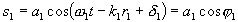
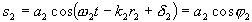
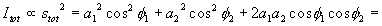
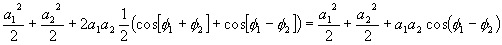
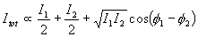
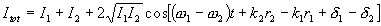
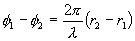
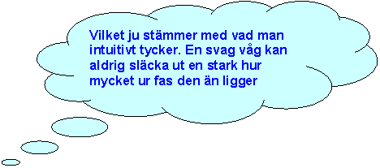
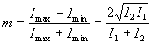

Interferens med ljud
Alla v�gor har den egenskapen att de kan interferera, dvs �verlagras
p� varandra och p� det s�ttet f�rst�rkas (konstruktiv interferens)
eller f�rsvagas (destruktiv interferens). Fr�n gymnasiet kommer man
kanske ih�g att f�rst�rkning inneb�r att v�gorna ligger i fas eller
ett heltal v�gl�ngder ur fas. Destruktiv interferens inneb�r i st�llet
att v�gorna ligger med en en s�dan fasrelation att de sl�cker ut
varandra, dvs om det �r tv� v�gor ligger de (p+�)l
fr�n varandra (p �r ett heltal).
Nu m�st vi emellertid till�ta oss att blanda in lite sunt f�rnuft. �r
det s� ljudk�llor beter sig i vardagslivet? Interfererar de med
varandra s� att det blir tyst p� en del st�llen?
Blir det verkligen
tyst
n�gonstans mellan tv� talande personer?
Naturligtvis blir det inte det. Intereferens �r ett fenomen som
alltid finns mellan tv� v�gk�llor, men som s�llan m�rks. Sk�let till
att det ibland inte m�rks �r matematiskt, s� nu kan vi inte skjuta upp
matten l�ngre.
Vi studerar tv� v�gor och l�gger till att b�rja med inga
begr�nsningar p� dem, dvs de kan ha olika amplitud (=ai),
vinkelfrekvens (=wi), avst�nd till k�llan (=ri) och olika begynnelsefas
(=di):
och

(d�r vi inf�rt f av lathetssk�l)
Intensiteten f�s nu genom att l�gga ihop dessa och kvadrera.


I sista ledet har vi medelv�rdesbildat cos�-termerna till 1/2 och den
f�rsta snabbt varierande cos-termen till noll.
Omm frekvenserna skiljer sig mycket �t kommer �ven den sista termen
att medelv�rdesbildas till noll, och d� kan vi bortse fr�n interferens
och g� till n�sta kapitel. Men om frekvenserna �r lika eller n�stan
lika blir sista termen v�sentlig och vi kan d� skriva:

Av ett mycket enkelt sk�l (Vilket?? !!!) kan man sluta sig till att proportionalitetskonstanten m�ste vara
2, dvs:

Liknande h�rledningar (fast i allm�nnhet mycket kn�ligare) kan man
g�ra f�r godtyckligt antal f�lt. Man l�gger ihop amplituderna,
kvadrerar och normerar.
Korstermerna i denna kvadrering medelv�rdesbildas till noll i
f�ljande situationer:
 Frekvenserna skiljer sig �t s� mycket att skillnadsfrekvensen
blir f�r h�g f�r att uppfatta
Frekvenserna skiljer sig �t s� mycket att skillnadsfrekvensen
blir f�r h�g f�r att uppfatta
 Man har s� m�nga f�lt som interfererar att man f�r korstermer
med alla uppt�nkliga v�rden vilka tar ut varandra
Man har s� m�nga f�lt som interfererar att man f�r korstermer
med alla uppt�nkliga v�rden vilka tar ut varandra
 Begynnelsefaserna varierar snabbt i tiden i f�rh�llande till
varandra
Begynnelsefaserna varierar snabbt i tiden i f�rh�llande till
varandra
Var och en av dessa svarar mot praktiska fall. F�rs�k fundera ut
n�got exempel p� varje och kolla sedan vad f�rfattaren kom att t�nka p�!
N�r korstermerna tar ut varandra f�r man allts� den resulterande
intensiteten som summan av de ing�ende f�ltens intensiteter. N�gon
interferens m�rks allts� inte. I detta fall s�gs v�gorna vara
inkoherenta med varandra

N�r termerna inte medelv�rdesbildas till noll (beror p� detektorn,
dvs �rat eller mikrofonen) s�gs f�lten vara koherenta och man f�r
rumsliga eller tidsm�ssiga variationer i intensiteten.
En direkt f�ljd av intensitetsformeln ovan �r att vid olika frekvens
f�s en intensitetsvariation med skillnadsfrekvensen som kallas
sv�vning (eng: beats).
I de fall b�gge k�llorna har samma frekvens och samma begynnelsefas
(t ex tv� h�gtalare som matas med samma ton, eller ljud fr�n en och
samma k�lla som g�tt tv� v�gar till mottagaren (exvis ljud som studsat
i en blank vattenyta) kommer fasskillnaden att f�renklas till
Detta ger oss exempelvis den v�lbekanta gymnasieformeln att max i
ett interferensfenomen intr�ffar d� v�gskillnaden �r ett helt antal
v�gl�ngder. (genomf�r h�rledningen av detta)
En annan viktig egenskap hos det interferensm�nster (omr�den med max
resp min) som uppkommer �r hur tydligt det �r, dvs hur stor skillnaden
�r mellan max och min, det brukar kvantiseras i det som kallas
modulation och definieras:


�d�r det sista ledet inte �r definition utan vad definitionen leder
till i fallet med tv� f�lt.
Observera att om intensiteterna �r lika kommer modulationen att bli
ett, medan den blir mindre och mindre (dvs otydligare m�nster) ju
st�rre den relativa skillnaden �r.
Till n�sta sida
(V�ghastigheter) )
Till n�sta kapitel (Geometrisk optik)